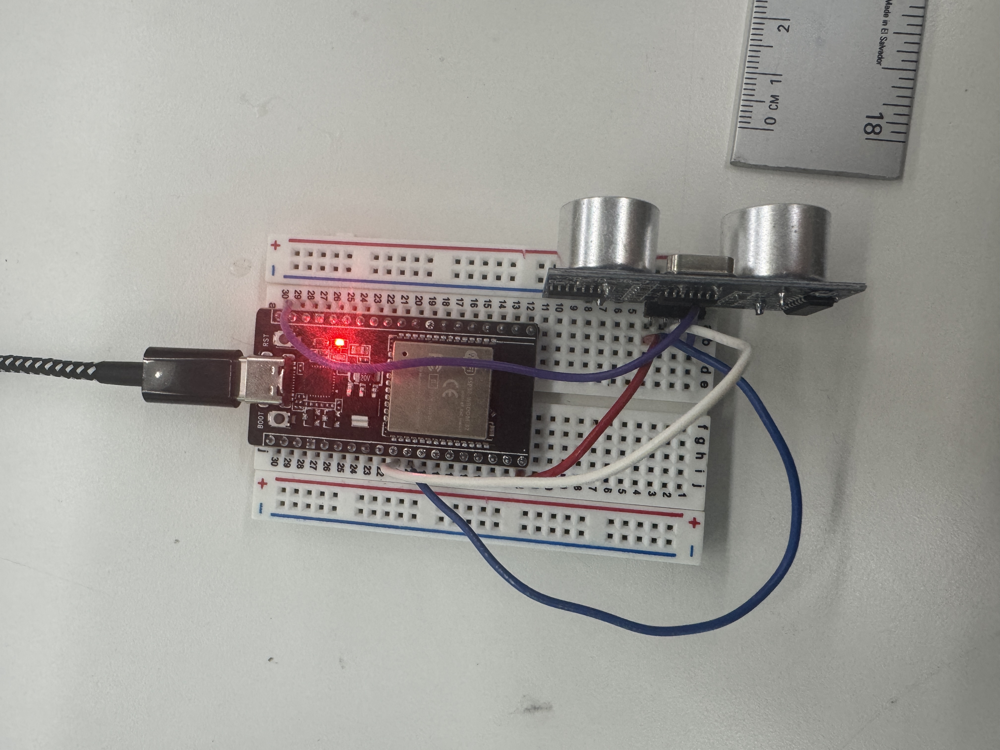

<div class="textcontainer">
<p class="margin"> </p>
<h3>Week 6: Electronic Inputs</h3>
<h4>Assignment 1: Distance Sensor with ESP32</h4>
<img src="./distancesensor.gif" width="400">

<p>
I used an HC-SR04 ultrasonic sensor to measure distance and display it on the serial monitor. It works by sending a pulse from the trigger pin and measuring how long it takes for the echo to return.
</p>
<h5>Steps I Took:</h5>
<ol>
<li>Connected VCC to 5V, GND to GND, TRIG to GPIO5, and ECHO to GPIO18.</li>
<li>Wrote a script to measure pulse length using <code>pulseIn()</code> and convert it to distance in cm.</li>
<li>Tested the sensor at different distances and confirmed accuracy within ~1 cm.</li>
</ol>
<h5>Code Snippet:</h5>
<pre><code class="language-arduino">
#define TRIG_PIN 5
#define ECHO_PIN 18
unsigned long previousMillis = 0;
const unsigned long interval = 500; // 500ms delay
void setup() {
Serial.begin(115200);
pinMode(TRIG_PIN, OUTPUT);
pinMode(ECHO_PIN, INPUT);
}
void loop() {
unsigned long currentMillis = millis();
if (currentMillis - previousMillis >= interval) {
previousMillis = currentMillis;
digitalWrite(TRIG_PIN, LOW);
delayMicroseconds(2);
digitalWrite(TRIG_PIN, HIGH);
delayMicroseconds(10);
digitalWrite(TRIG_PIN, LOW);
long duration = pulseIn(ECHO_PIN, HIGH);
float distance = duration * 0.034 / 2;
Serial.print("Distance: ");
Serial.print(distance);
Serial.println(" cm");
}
}
</code></pre>
<h5>Calibration Data:</h5>
<p>Here’s sample data I got from the sensor at different known distances:</p>
<table class="table table-bordered">
<thead>
<tr>
<th>Measured Distance (cm)</th>
<th>Actual Distance (cm)</th>
</tr>
</thead>
<tbody>
<tr><td>7.05</td><td>7</td></tr>
<tr><td>14.90</td><td>15</td></tr>
<tr><td>29.12</td><td>30</td></tr>
<tr><td>44.83</td><td>45</td></tr>
</tbody>
</table>
<p>The readings were consistently accurate within about ±1 cm. The measurable range is roughly 2–400 cm according to Google however I only measured at short distances up to 45cm. I found that the measured distance varies depending on the angle of the end point.</p>
</div>